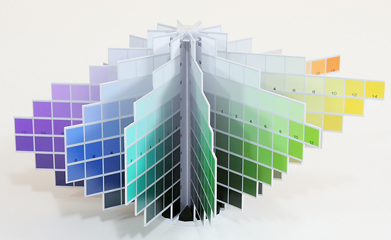

色彩理論における表色系
色彩理論を勉強するには、色彩検定協会の公式テキストを見るのが一番確実かと思います。その中からデジタルイラストの着色の際に役立つことをピックアップして、実用的にまとめておくと便利だと思います。このテーマを一回の記事にまとめるのはちっとばかし詰め込み過ぎな気がするので数回に分けます。そんなわけで今回は色彩検定で使われている表色系の話でもしていきますか。
マンセル表色系
マンセル表色系は色相・明度・彩度の3つのパラメータで色を規定する方式です。パラメータは何段階というのが決まってますが、イラストを描く上で大して必要ないので今回は考えません。重要なのは3つのパラメータの関係性を把握しておく事です。
 出典 Wikipedia
出典 Wikipedia
そしてこのマンセル表色系、CGイラストを描くときに目にしたことがあるかもしれません。ツールの色を選択するウィンドウを色相環表示にすると、下図のように、まんまマンセル表色系になります。レインボーな輪っかが色相環で、中の三角形が明度と彩度です。下図を例にすると、色相環の円周上のグラデーションで色相を、三角形の垂直方向のグラデーションで明度、水平方向のグラデーションで彩度を調整することになります。使ったことある人なら熟知してますね。

では重要だといっていた3つのパラメータの関係性について、基礎的なことですが一応説明しておきます。まず色相環上の色相の分布の仕方は、ある色の反対側にその色の補色が位置するということです。補色同士の色は互いに引き立て合う相乗効果があるので、イラストを塗るときにこの原理を利用して深みを出すという手法がよく知られています。詳しい利用方法は後で勉強してまとめようと思います。
もう一つおさえておくことは、中の三角形の頂点は色相の位置に合わせて回転するという事。言わなくても知っていると思いますが言葉にしておくと、色相によって三角形の角度が変わっても、明度と彩度のグラデーションの関係は一定です。これは後でトーンの話に関係してきます。
PCCS（Practical Color Coordinate System）
PCCSは、色相・トーンの2つのパラメータで色を規定する方式です。トーンとは、さっきのマンセル表色系の明度と彩度がトーンという一つの概念にまとめられたものと考えればいいです。そして下図のような各色相毎に明度と彩度の関係をまとめたものを等色相面といいます。
 出典 日本色研事業株式会社
出典 日本色研事業株式会社
PCCSが便利なのは、色相の性格と、トーンの性格の2つで配色が決められるようになったことです。マンセル表色系では3つのパラメータの性格を見ながら、色味、明るさ、鮮やかさのバランスをとる必要がありました。
この中でも、色味を決める色相なんてものは大抵は描くものによってはじめから決まっているものなのであまり悩まされません。もっと言えば好みで適当に決めても不自然な配色にはならないでしょう。また、明度と彩度について考えるということは二次元座標上で「明度は垂直方向にこれくらいで彩度は水平方向にこれくらい」という思考過程を踏んでいたところを、トーンについて考えることで「トーンはここ」というシンプルな思考過程になります。上図を参考にすると、三角形の中にいくつかの円が配置されていてそれぞれに名前がつけらているため、明度と彩度の組み合わせを名指しで選択できるということです。
つまりPCCSで明度と彩度がトーンにまとめられたことで、いちいち色味と明るさと鮮やかさのバランスをとる必要がなくなったのです。すると、トーンのパターンさえ知っておけば自然とバランスのとれた配色ができるわけです。トーンはいくつかパターンがあり、それぞれ言葉で形容できるように理論づけられています。
色立体と固有明度
トーンは先ほど言ったとおり明度と彩度を一つにまとめた概念で、それぞれの性格に合った名前が当てられています。さきほどの図では各トーンの周りに色相環があったように、トーンとは別次元にあるだけで色相も一緒に考えることができます。明度（y軸）と彩度（x軸）に色相（z軸）を一つにまとめる、つまりトーンと色相の関係を表している図として「色立体」があります。z軸である色相は環状なので、各色相の等色相面を配置すると回転体を形成します。その球体が少し歪んだ形になっているのは、色相とトーンの関係に「固有明度」の概念を加えて視覚化しているからです。

via 色彩検定 カラー
色立体において、黄色の等色相面は上部が、青の等色相面は下部が出っ張っています。このときの垂直方向は明度を表しています。これが何を意味するかというと、等色相面の先端は最も彩度が高い色ですが、色相によって最も彩度が高くなる色の明度が異なるということです。ある色相で最も彩度が高くなる色の明度のことを固有明度といいます。

固有明度は、黄色が最も明るく、青紫が最も暗くなります。色相環で見ると黄色と青紫は対極にあることが分かります。つまり固有明度は色相環上で黄色から青紫に向かって次第に暗くなるということができます。これはイラストを塗るときに知っておくべき知識です。通常は影の部分は暗く塗りますが、そのときの色の作り方は3種類あることになります。一つ目は明度を下げて塗る方法。二つ目は固有明度の低い色相で塗る方法。三つ目は明度を下げつつ固有明度の低い色相にずらして塗る方法。

このように色彩理論を理解しておけば色の塗り方にも意味が生まれてきます。いま挙げた例についてもどれが正しいというのではなく、それぞれの塗り方によって得られる効果が違います。詳しい色彩の効果については後日の記事で。今回の記事を要約すると、「色は色相・明度・彩度の3つのパラメータで表され、そのうち明度・彩度をトーンという一つの概念でまとめることができ、トーンを表す等色相面を色相環上に配置すると色立体となり、色立体では各色相の固有明度の相対関係が把握でき、これらの理論はデジタルイラストを塗るときに応用できる」といったところです。